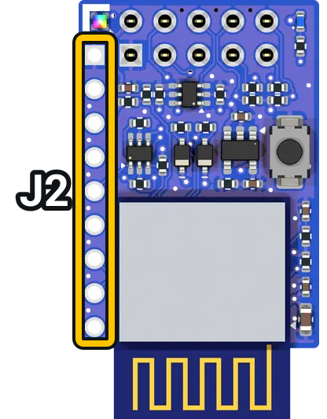

Commissioning
Commissioning installs the Airfrog firmware on a new Airfrog PCB. Airfrogs are normally sold pre-commissioned. This step is usually only required if you have your own Airfrog PCBs manufactured.

Commissioning is performed using a desktop computer with an adapter connected to Airfrog's J2 connector.
The J2 connector does not require a soldered header. Pins from the serial adapter can be wedged in the holes temporarily.
The adapter can be:
Serial connection
USB serial adapter
You must use a 3.3V USB serial adapter. Do not use a 5V USB serial adapter.
- Connect the adapter to J2 as follows:
Adapter J2 GND GND TX RX RX TX DTR DTR RTS RTS - Connect Airfrog to a microcontroller board using J1 to power it.
- Follow the commissioning steps below.
Raspberry Pi Pico or Pico 2
A Raspberry Pi Pico or Pico 2 is used to power Airfrog and provide the serial connection.
- Install the Airfrog CLI.
- Hold the BOOTSEL button down while connecting the Pico/Pico 2 to your computer, then run
airfrog pico program serial-adapter, which flashes USB serial adapter firmware to the Pico/Pico 2. - Connect the Pico/Pico 2 to Airfrog as follows:
Pico pin Airfrog 1 J2 RX 2 J2 TX 3 J2 GND 4 J2 DTR 5 J2 RTS 40 J1 pin 2 - Follow the commissioning steps below.
One ROM Fire
Any USB model of One ROM Fire can be used as a USB serial adapter.
- Remove One ROM if it is installed in a machine.
- Install the One ROM CLI.
- Plug Airfrog onto One ROM and connect One ROM legs to Airfrog as follows:
One ROM J2 Leg/pin 1 RX Leg/pin 2 TX Leg/pin 3 DTR Leg/pin 4 RTS - Connect One ROM to your computer via USB and run
onerom airfrog recovery commission, which temporarily turns One ROM into a USB serial adapter. - Follow the commissioning steps below.
- Unplug One ROM to return it to normal operation.
Commissioning steps
In the commissioning tool below:
- Select Connect and choose the serial port.
- Install firmware, then Install.
- Optionally: once the firmware is installed you can set up Airfrog's WiFi and other settings, or follow the instructions in Getting started.
Command line
Alternatively, the Airfrog CLI can be used to commission Airfrog:
airfrog commission